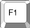
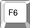
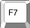
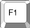
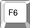
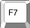
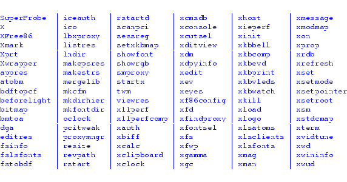
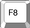
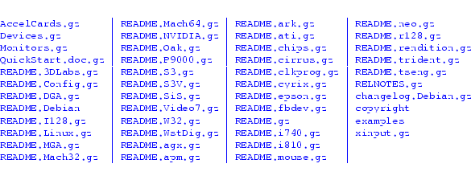

| Purchase | Copyright © 2002 Paul Sheer. Click here for copying permissions. | Home |
|
|
| |
Before The X Window System (from now on called X), UNIX was terminal based and had no proper graphical environment, sometimes called a GUI. [Graphical User Interface.] X was designed to fulfill that need and to incorporate into graphics all the power of a networked computer.
X was developed in 1985 at the Massachusetts Institute of Technology by the X Consortium and is now owned by the Open Software Foundation (OSF). It comprises over 2 million lines of C code that run on every variant of UNIX.
You might imagine that allowing an application to put graphics on a screen involves nothing more than creating a user library that can perform various graphical functions like line drawing, font drawing, and so on. To understand why X is more than merely this, consider the example of character terminal applications: these are programs that run on a remote machine while displaying to a character terminal and receiving feedback (keystrokes) from that character terminal. There are two distinct entities at work--the application and the user's character terminal display; these two are connected by some kind of serial or network link. Now what if the character terminal could display windows and other graphics (in addition to text), while giving feedback to the application with a mouse (as well as a keyboard)? This is what X achieves.
X is a protocol of commands that are sent and received between an application and a special graphical terminal called an X Server (from now on called the server). [The word ``server'' is confusing, because there are lots of X servers for each client machine, and the user sits on the server side. This is in the opposite sense to what we usually mean by a server.] How the server actually draws graphics on the hardware is irrelevant to the developer; all the application needs to know is that if it sends a particular sequence of bytes down the TCP/IP link, the server will interpret them to mean that a line, circle, font, box, or other graphics entity should be drawn on its screen. In the other direction, the application needs to know that particular sequences of bytes mean that a keyboard key was pressed or that a mouse has moved. This TCP communication is called the X protocol.
When you are using X, you will probably not be aware that this interaction is happening. The server and the application might very well be on the same machine. The real power of X is evident when they are not on the same machine. Consider, for example, that 20 users can be logged in to a single machine and be running different programs that are displayed on 20 different remote X servers. It is as though a single machine was given multiple screens and keyboards. It is for this reason that X is called a network transparent windowing system.
The developer of a graphical application can then dispense with having to know anything about the graphics hardware itself (consider DOS applications where each had to build in support for many different graphics cards), and that developer can also dispense with having to know what machine the graphics will be displayed on.
The precise program that performs this miracle is /usr/X11/bin/X. A typical sequence of events to get a graphical program to run is as follows. (This is an illustration. In practice, numerous utilities perform these functions in a more generalized and user-friendly way.)
Communication between the application and the server is somewhat more complex than the mere drawing of lines and rectangles and reporting of mouse and key events. The server must be able to handle multiple applications connecting from multiple machines, and these applications may interact with each other (think of cut and paste operations between applications that are actually running on different machines.) Some examples of the fundamental X Protocol requests that an application can make to a server are the following:
The programmer of an X application need not be directly concerned with these requests. A high-level library handles the details of the server interaction. This library is called the X Library, /usr/X11R6/lib/libX11.so.6.
One of the limitations of such a protocol is that developers are restricted to the set of commands that have been defined. X overcame this problem by making the protocol extensible [Being able to add extensions and enhancements without complicating or breaking compatibility.] from the start. These days there are extensions to X to allow, for example, the display of 3D graphics on the server, the interpretation of PostScript commands, and many other capabilities that improve aesthetic appeal and performance. Each extension comes with a new group of X protocol requests and events, as well as a programmers' library interface.
An example of a real X program follows. This is about the simplest an X program is ever going to get. The program displays a small XPM image file in a window and waits for a key press or mouse click before exiting. You can compile it with gcc -o splash splash.c -lX11 -L/usr/X11R6/lib. (You can see right away why there are few applications written directly in X.) Notice that all X library functions are prefixed by an X.
5 10 15 20 25 30 35 40 45 50 55 60 65 70 75 80 85 90 95 100 105 110 115 120 125 130 135 140 145 150 155 160 165 170 175 180 185 190 195 200 205 210 215 |
/* splash.c - display an image */ #include <stdlib.h>#include <stdio.h>#include <string.h> #include <X11/Xlib.h> /* XPM */static char *graham_splash[] = {/* columns rows colors chars-per-pixel */"28 32 16 1"," c #34262e", ". c #4c3236", "X c #673a39", "o c #543b44","O c #724e4e", "+ c #6a5459", "@ c #6c463c", "# c #92706c","$ c #92685f", "% c #987e84", "& c #aa857b", "n c #b2938f","= c #bca39b", "- c #a89391", "; c #c4a49e", ": c #c4a8a4",/* pixels */ "--%#%%nnnn#-nnnnnn=====;;=;:", "--------n-nnnnnn=n==;==;=:;:","----n--n--n-n-n-nn===:::::::", "-----&------nn-n=n====::::::","----------------n===;=::::::", "----%&-%--%##%---n===:::::::","------%#%+++o+++----=:::::::", "--#-%%#+++oo. oo+#--=:::::::","-%%%%++++o.. .++&-==:::::", "---%#+#+++o. oo+&n=::::","--%###+$+++Oo. o+#-:=::", "-&%########++Oo @$-==:","####$$$+###$++OX .O+&==", "&##$O+OXo+++$#+Oo. ..O&&-","&##+OX..... .oOO@@... o@+&&", "&###$Oo.o++ ..oX@oo@O$&-","n###$$$$O$o ...X.. .XXX@$$$&", "nnn##$$#$OO. .XX+@ .XXX@$$#&","nnn&&%####$OX.X$$@. XX$$$$&", "nnnnn&&###$$$OX$$X..XXX@O$&n","nnnnnn&&%###$$$$@XXXXX@O$&&n", ";n=;nnnn&&&#$$$$$@@@@@@O$&n;",";n;=nn;nnnn#&$$$@X@O$@@$$&n;", "=n=;;;n;;nn&&&$$$$OO$$$$$&;;","n;=n;;=nn&n&&&&&&$$$$$##&&n;", "n;=;;;;;;;;&&&n&&&&&&&&#&n=;",";n;n;;=n;&;&;&n&&&&&&&#nn;;;", "n;=;;;;;;;;n;&&n&&&n&nnnn;;;","n=;;:;;=;;nn;&n;&n&nnnnnnn=;", "nn;;;;;;;;;;;;;;n&nnnnnn===;","=nn;;:;n;;;;&&&&n&&nnnnnn;=;", "n====;;;;&&&&&&&nnnnnnnnnn;;"}; int main (int argc, char **argv){ int i, j, x, y, width, height, n_colors; XSetWindowAttributes xswa; XGCValues gcv; Display *display; char *display_name = 0; int depth = 0; Visual *visual; Window window; Pixmap pixmap; XImage *image; Colormap colormap; GC gc; int bytes_per_pixel; unsigned long colors[256]; unsigned char **p, *q; for (i = 1; i < argc - 1; i++) if (argv[i]) if (!strcmp (argv[i], "-display")) display_name = argv[i + 1]; display = XOpenDisplay (display_name); if (!display) { printf ("splash: cannot open display\n"); exit (1); } depth = DefaultDepth (display, DefaultScreen (display)); visual = DefaultVisual (display, DefaultScreen (display)); p = (unsigned char **) graham_splash; q = p[0]; width = atoi ((const char *) q); q = (unsigned char *) strchr (q, ' '); height = atoi ((const char *) ++q); q = (unsigned char *) strchr (q, ' '); n_colors = atoi ((const char *) ++q); colormap = DefaultColormap (display, DefaultScreen (display)); pixmap = XCreatePixmap (display, DefaultRootWindow (display), width, height, depth); gc = XCreateGC (display, pixmap, 0, &gcv); image = XCreateImage (display, visual, depth, ZPixmap, 0, 0, width, height, 8, 0); image->data = (char *) malloc (image->bytes_per_line * height + 16); /* create color palette */ for (p = p + 1, i = 0; i < n_colors; p++, i++) { XColor c, c1; unsigned char *x; x = *p + 4; if (*x == '#') { unsigned char *h = (unsigned char *) "0123456789abcdef"; x++; c.red = ((unsigned long) strchr (h, *x++) - (unsigned long) h) << 12; c.red |= ((unsigned long) strchr (h, *x++) - (unsigned long) h) << 8; c.green = ((unsigned long) strchr (h, *x++) - (unsigned long) h) << 12; c.green |= ((unsigned long) strchr (h, *x++) - (unsigned long) h) << 8; c.blue = ((unsigned long) strchr (h, *x++) - (unsigned long) h) << 12; c.blue |= ((unsigned long) strchr (h, *x++) - (unsigned long) h) << 8; if (!XAllocColor (display, colormap, &c)) printf ("splash: could not allocate color cell\n"); } else { if (!XAllocNamedColor (display, colormap, (char *) x, &c, &c1)) printf ("splash: could not allocate color cell\n"); } colors[(*p)[0]] = c.pixel; } bytes_per_pixel = image->bytes_per_line / width; /* cope with servers having different byte ordering and depths */ for (j = 0; j < height; j++, p++) { unsigned char *r; unsigned long c; q = image->data + image->bytes_per_line * j; r = *p; if (image->byte_order == MSBFirst) { switch (bytes_per_pixel) { case 4: for (i = 0; i < width; i++) { c = colors[*r++]; *q++ = c >> 24; *q++ = c >> 16; *q++ = c >> 8; *q++ = c; } break; case 3: for (i = 0; i < width; i++) { c = colors[*r++]; *q++ = c >> 16; *q++ = c >> 8; *q++ = c; } break; case 2: for (i = 0; i < width; i++) { c = colors[*r++]; *q++ = c >> 8; *q++ = c; } break; case 1: for (i = 0; i < width; i++) *q++ = colors[*r++]; break; } } else { switch (bytes_per_pixel) { case 4: for (i = 0; i < width; i++) { c = colors[*r++]; *q++ = c; *q++ = c >> 8; *q++ = c >> 16; *q++ = c >> 24; } break; case 3: for (i = 0; i < width; i++) { c = colors[*r++]; *q++ = c; *q++ = c >> 8; *q++ = c >> 16; } break; case 2: for (i = 0; i < width; i++) { c = colors[*r++]; *q++ = c; *q++ = c >> 8; } break; case 1: for (i = 0; i < width; i++) *q++ = colors[*r++]; break; } } } XPutImage (display, pixmap, gc, image, 0, 0, 0, 0, width, height); x = (DisplayWidth (display, DefaultScreen (display)) - width) / 2; y = (DisplayHeight (display, DefaultScreen (display)) - height) / 2; xswa.colormap = colormap; xswa.background_pixmap = pixmap; window = XCreateWindow (display, DefaultRootWindow (display), x, y, width, height, 0, depth, InputOutput, visual, CWColormap | CWBackPixmap, &xswa); XSelectInput (display, window, KeyPressMask | ButtonPressMask); XMapRaised (display, window); while (1) { XEvent event; XNextEvent (display, &event); if (event.xany.type == KeyPress || event.xany.type == ButtonPressMask) break; } XUnmapWindow (display, window); XCloseDisplay (display); return 0;} |
You can learn to program X from the documentation in the X Window System sources--see below. The preceding program is said to be ``written directly in X-lib'' because it links only with the lowest-level X library, libX11.so. The advantage of developing this way is that your program will work across every variant of UNIX without any modifications. Notice also that the program deals with any type of display device regardless of its resolution (width x height or pixels-per-inch), color capacity, or hardware design.
To program in X is tedious. Therefore, most developers will use a higher-level widget library. Most users of GUIs will be familiar with widgets: buttons, menus, text input boxes, and so on. X programmers have to implement these manually. The reason widgets were not built into the X protocol is to allow different user interfaces to be built on top of X. This flexibility makes X the enduring technology that it is.
The X Toolkit ( libXt.so) is a widget library that has always come free with X. It is crude-looking by today's standards. It doesn't feature 3D (shadowed) widgets, although it is comes free with X. [The excellent xfig application, an X Toolkit application, was in fact used to do the diagrams in this book.]Motif ( libM.so) is a modern, full-featured widget library that had become an industry standard. Motif is, however, bloated, slow, and dependent on the X toolkit. It has always been an expensive proprietary library. Tk (tee-kay, libtk.so) is a library that is primarily used with the Tcl scripting language. It was probably the first platform-independent library (running on Windows, all UNIX variants, and the Apple Mac). It is, however, slow and has limited features (this is progressively changing). Both Tcl and Motif are not very elegant-looking.
Around 1996, we saw a lot of widget libraries popping up with different licenses. V, xforms, and graphix come to mind. (This was when I started to write coolwidgets--my own widget library.) There was no efficient, multipurpose, Free, and elegant-looking widget library for UNIX. This was a situation that sucked and was retarding Free software development.
At about that time, a new GUI library was released. It was called Qt and was developed by Troll Tech. It was not free, but it was an outstanding technical accomplishment in that it worked efficiently and cleanly on many different platforms. It was shunned by some factions of the Free software community because it was written in C++, [Which is not considered to be the standard development language by the Free Software Foundation because it is not completely portable and possibly for other reasons.]and was only free for noncommercial applications to link with.
Nevertheless, advocates of Qt went ahead and began producing the outstanding KDE desktop project--a set of higher-level development libraries, a window manager, and many core applications that together make up the KDE Desktop. The licensing issues with Qt have relaxed somewhat, and it is now available under both the GPL and a proprietary license.
At one point, before KDE was substantially complete, Qt antagonists reasoned that since there were more lines of Qt code than of KDE code, it would be better to develop a widget library from scratch--but that is an aside. The Gtk widget library was written especially for gimp (GNU Image Manipulation Program), is GPL'd and written entirely in C in low-level X calls (i.e., without the X Toolkit), object oriented, fast, clean, extensible and having a staggering array of features. It comprises Glib, a library meant to extend standard C, providing higher-level functions usually akin only to scripting languages, like hash tables and lists; Gdk, a wrapper around raw X Library to give GNU naming conventions to X, and to give a slightly higher level interface to X; and the Gtk library itself.
Using Gtk, the Gnome project began, analogous to KDE, but written entirely in C.
OpenStep (based on NeXTStep) was a GUI specification published in 1994 by Sun Microsystems and NeXT Computers, meant for building applications. It uses the Objective-C language, which is an object-oriented extension to C, that is arguably more suited to this kind of development than is C++.
OpenStep requires a PostScript display engine that is analogous to the X protocol, but it is considered superior to X because all graphics are independent of the pixel resolution of the screen. In other words, high-resolution screens would improve the picture quality without making the graphics smaller.
The GNUStep project has a working PostScript display engine and is meant as a Free replacement to OpenStep.
X was developed by the X Consortium as a standard as well as a reference implementation of that standard. There are ports to every platform that supports graphics. The current version of the standard is 11 release 6 (hence the directory /usr/X11R6/). There will probably never be another version.
XFree86 <http://www.xfree86.org/> is a free port of X that includes LINUX Intel machines among its supported hardware. X has some peculiarities that are worth noting if you are a Windows user, and XFree86 has some over those. XFree86 has its own versioning system beneath the ``11R6'' as explained below.
(See Section 43.6 for configuring X).
At a terminal prompt, you can type:
|
X |
to start X (provided X is not already running). If you have configured X properly (including putting /usr/X11R6/bin in your PATH), then this command will initiate the graphics hardware and a black-and-white stippled background will appear with a single X as the mouse cursor. Contrary to intuition, this means that X is actually working properly.
 -
- -
- .
-- ... --.
-. The seven common virtual consoles of
LINUX are 1-6 as text terminals, and 7 as an X terminal
(as explained in Section 2.7).
--
.
-- ... --.
-. The seven common virtual consoles of
LINUX are 1-6 as text terminals, and 7 as an X terminal
(as explained in Section 2.7).
-- and
--.
and
--.
/usr/X11R6/bin/ contains a large number of X utilities
that most other operating systems have based theirs on. Most of
these begin with an
x. The basic XFree86 programs
are:

To run an X program, you need to tell the program what remote server to connect to. Most programs take the option -display to specify the X server. With X running in your seventh virtual console, type into your first virtual console:
|
xterm -display localhost:0.0 |
localhost refers to the machine on which the X server is running--in this case, our own. The first 0 means the screen we want to display on (X supports multiple physical screens in its specification). The second 0 refers to the root window we want to display on. Consider a multiheaded [For example, two adjacent monitors that behave as one continuous screen.] display: we would like to specify which monitor the application pops up on.
While xterm is running, switching to your X session will reveal a character terminal where you can type commands.
A better way to specify the display is to use the DISPLAY environment variable:
|
DISPLAY=localhost:0.0export DISPLAY |
causes all subsequent X applications to display to localhost:0.0, although a -display on the command-line takes first priority.
The X utilities listed above are pretty ugly and unintuitive. Try, for example, xclock, xcalc, and xedit. For fun, try xbill. Also run
|
rpm -qa | grep '^x' |
You can start up a second X server on your machine. The command
|
/usr/X11R6/bin/X :1 |
starts up a second X session in the virtual console
8. You can switch to it by using -- or -.
You can also start up a second X server within your current X display:
|
/usr/X11R6/bin/Xnest :1 & |
A smaller X server that uses a subwindow as a display device will be started. You can easily create a third X server within that, ad infinitum.
To get an application to display to this second server, use, as before,
|
DISPLAY=localhost:1.0export DISPLAYxterm |
or
|
xterm -display localhost:1.0 |
Manually starting X and then running an application is
not the way to use X. We want a window manager to run
applications properly. The best window manager available (sic) is
icewm, available from
icewm.cjb.net <http://icewm.cjb.net/>. Window managers
enclose each application inside a resizable bounding box and
give you the
,
 ,
and
buttons, as well as possibly a
task bar and a Start button that you may be familiar with. A
window manager is just another X application that has the additional
task of managing the positions of basic X applications on your
desktop. Window managers executables are usually suffixed by a
wm.
If you don't have
icewm, the minimalist's
twm window
manager will almost always be installed.
,
and
buttons, as well as possibly a
task bar and a Start button that you may be familiar with. A
window manager is just another X application that has the additional
task of managing the positions of basic X applications on your
desktop. Window managers executables are usually suffixed by a
wm.
If you don't have
icewm, the minimalist's
twm window
manager will almost always be installed.
An enormous amount of religious attention is given to window managers. There are about 20 useful choices to date. Remember that any beautiful graphics are going to irritate you after you sit in front of the computer for a few hundred hours. You also don't want a window manager that eats too much memory or uses too much space on the screen.
The way we described an X server may leave you wondering if anyone on the Internet can start an application on your display. By default, X prohibits access from all machines except your own. The xhost command enables access from particular machines. For instance, you can run xhost +192.168.5.7 to allow that host to display to your machine. The command xhost + completely disables access control. A typical procedure is the running of an application on a remote machine to a local machine. A sample session follows:
5 10 15 |
[psheer@divinian]# xhost +192.168.3.2192.168.3.2 being added to access control list[psheer@divinian]# ifconfig | grep inet inet addr:192.168.3.1 Bcast:192.168.3.255 Mask:255.255.255.0 inet addr:127.0.0.1 Mask:255.0.0.0[psheer@divinian]# telnet 192.168.3.2Trying 192.168.3.2...Connected to 192.168.3.2.Escape character is '^]'.Debian GNU/Linux 2.2 cericoncericon login: psheerPassword: Last login: Fri Jul 13 18:46:43 2001 from divinian on pts/1[psheer@cericon]# export DISPLAY=192.168.3.1:0.0[psheer@cericon]# nohup rxvt &[1] 32573nohup: appending output to 'nohup.out'[psheer@cericon]# exitConnection closed by foreign host. |
Start an xterm to demonstrate the following mouse operations.
X predates the cut-and-paste conventions of Windows and the Mac. X requires a three-button mouse, although pushing the two outer buttons simultaneously is equivalent to pushing the middle button. [That is, provided X has been configured for this--see the Emulate3Buttons option in the configuration file example below.] Practice the following:
Modern Gtk and Qt applications have tried to retain compatibility with these mouse conventions.
The official X distribution comes as an enormous source package available in tgz format at http://www.xfree86.org/. It is traditionally packed as three tgz files to be unpacked over each other--the total of the three is about 50 megabytes compressed. This package has nothing really to do with the version number X11R6--it is a subset of X11R6.
Downloading and installing the distribution is a major undertaking, but you should do it if you are interested in X development.
All UNIX distributions come with a compiled and (mostly) configured X installation; hence, the official X distribution should never be needed except by developers.
The X Window System comes with tens of megabytes of documentation.
All the books describing all of the programming APIs are included inside the X distribution. Most of these are of specialized interest and will not be including in your distribution by default--download the complete distribution if you want them. You can then look inside xc/doc/specs (especially xc/doc/specs/X11) to begin learning how to program under X.
Debian also comes with the xbooks package, and RedHat with the XFree86-doc packages.
Important to configuring X is the directory
/usr/X11R6/lib/X11/doc/ or
/usr/share/doc/xserver-common/. It may
contain, for example,

As you can see, there is documentation for each type of graphics card.
Learning how to configure X is a simple matter of reading the
QuickStart guide and then checking the specifics for your card.
Any missing documentation can be found on the XFree86 <http://www.xfree86.org/> web site.
New graphics cards are coming out all the time. XFree86 <http://www.xfree86.org/> contains FAQs about cards and the latest binaries, should you not be able to get your card working from the information below. Please always search the XFree86 web site for information on your card and for newer X releases before reporting a problem.
Configuring X involves editing XFree86's configuration file /etc/X11/XF86Config. Such a file may have been produced at installation time but will not always be correct. You will hence frequently find yourself having to make manual changes to get X running in full resolution.
Note that XFree86 has a slightly different configuration file format for the new version 4. Differences are explained below.
The documentation discussed above is a lot to read. The simplest possible way to get X working is to determine what mouse you have, and then create a file, /etc/X11/XF86Config (back up your original) containing the following. Adjust the "Pointer" section for your correct Device and Protocol. If you are running X version 3.3, you should also comment out the Driver "vga" line. You may also have to switch the line containing 25.175 to 28.32 for some laptop displays.
5 10 15 20 25 30 35 40 45 50 |
Section "Files" RgbPath "/usr/X11R6/lib/X11/rgb" FontPath "/usr/X11R6/lib/X11/fonts/misc/"EndSectionSection "ServerFlags"EndSectionSection "Keyboard" Protocol "Standard" AutoRepeat 500 5 XkbDisable XkbKeymap "xfree86(us)"EndSectionSection "Pointer"# Protocol "Busmouse"# Protocol "IntelliMouse"# Protocol "Logitech" Protocol "Microsoft"# Protocol "MMHitTab"# Protocol "MMSeries"# Protocol "MouseMan"# Protocol "MouseSystems"# Protocol "PS/2" Device "/dev/ttyS0"# Device "/dev/psaux" Emulate3Buttons Emulate3Timeout 150EndSectionSection "Monitor" Identifier "My Monitor" VendorName "Unknown" ModelName "Unknown" HorizSync 31.5 - 57.0 VertRefresh 50-90# Modeline "640x480" 28.32 640 664 760 800 480 491 493 525 Modeline "640x480" 25.175 640 664 760 800 480 491 493 525EndSectionSection "Device" Identifier "Generic VGA" VendorName "Unknown" BoardName "Unknown" Chipset "generic"# Driver "vga" Driver "vga"EndSectionSection "Screen" Driver "vga16" Device "Generic VGA" Monitor "My Monitor" Subsection "Display" Depth 4 Modes "640x480" Virtual 640 480 EndSubsectionEndSection |
You can then start X. For XFree86 version 3.3, run
|
/usr/X11R6/bin/XF86_VGA16 -cc 0 |
or for XFree86 version 4, run
|
/usr/X11R6/bin/XFree86 -cc 0 |
Both of these will print out a status line containing clocks: ... confirming whether your choice of 25.175 was correct. [This is the speed, in Megahertz, that pixels can come from your card and is the only variable to configuring a 16-color display.]
You should now have a working gray-level display that is actually almost usable. It has the advantage that it always works.
XFree86 version 4 has ``Plug-and-Play'' support. Simply run
|
/usr/X11R6/bin/XFree86 -configure |
to produce a working XF86Config file. You can copy this file to /etc/X11/XF86Config and immediately start running X. However, the file you get may be less than optimal. Read on for detailed configuration.
A simple and reliable way to get X working is given by the following steps (if this fails, then you will have to read some of the documentation described above). There is also a tool called Xconfigurator which provides a user-friendly graphical front-end.
5 |
Section "<section-name>" <config-line> <config-line> <config-line>EndSection |
5 |
# 640x480 @ 60 Hz, 31.5 kHz hsyncModeline "640x480" 25.175 640 664 760 800 480 491 493 525# 800x600 @ 56 Hz, 35.15 kHz hsyncModeLine "800x600" 36 800 824 896 1024 600 601 603 625# 1024x768 @ 87 Hz interlaced, 35.5 kHz hsyncModeline "1024x768" 44.9 1024 1048 1208 1264 768 776 784 817 Interlace |
If you don't find modelines in your XF86Config you can use this as your monitor section:
5 10 |
Section "Monitor" Identifier "My Monitor" VendorName "Unknown" ModelName "Unknown" HorizSync 30-40 VertRefresh 50-90 Modeline "320x200" 12.588 320 336 384 400 200 204 205 225 Doublescan ModeLine "400x300" 18 400 416 448 512 300 301 302 312 Doublescan Modeline "512x384" 20.160 512 528 592 640 384 385 388 404 -HSync -VSync Modeline "640x480" 25.175 640 664 760 800 480 491 493 525 ModeLine "800x600" 36 800 824 896 1024 600 601 603 625 Modeline "1024x768" 44.9 1024 1048 1208 1264 768 776 784 817 InterlaceEndSection |
5 |
Section "Device" Identifier "My Video Card" VendorName "Unknown" BoardName "Unknown" VideoRam 4096EndSection |
5 |
Section "Device" Identifier "My Video Card" Driver "ati" VendorName "Unknown" BoardName "Unknown" VideoRam 4096EndSection |
|
Option "no_accel" Option "sw_cursor" Option "no_pixmap_cache" |
5 10 15 20 25 |
Section "Screen" Identifier "My Screen" Device "My Video Card" Monitor "My Monitor" DefaultDepth 16 Subsection "Display" ViewPort 0 0 Virtual 1024 768 Depth 16 Modes "1024x768" "800x600" "640x480" "512x384" "400x300" "320x240" EndSubsection Subsection "Display" ViewPort 0 0 Virtual 1024 768 Depth 24 Modes "1024x768" "800x600" "640x480" "512x384" "400x300" "320x240" EndSubsection Subsection "Display" ViewPort 0 0 Virtual 1024 768 Depth 8 Modes "1024x768" "800x600" "640x480" "512x384" "400x300" "320x240" EndSubsectionEndSection |
|
/usr/X11R6/bin/XFree86-<card> -bpp 16 |
For XFree86 version 4, card support is compiled as separate modules named /usr/X11R6/lib/modules/drivers/cardname _drv.o. A single binary executable /usr/X11R6/bin/XFree86 loads the appropriate module based on the Driver "cardname " line in the "Device" section. Having added this, you can run
|
/usr/X11R6/bin/XFree86 |
![[*]](crossref.png) .
.
|
#!/bin/shexec /usr/X11R6/bin/<server> -bpp 16 |
X introduces the concept of a visual. A visual is the hardware method used to represent colors on your screen. There are two common and four specialized types:
Another way is to use two bytes, with 5 bits for red, 6 for green, and then 5 for blue. This gives you 32 shades of red and blue, and 64 shades of green (green should have more levels because it has the most influence over the pixel's overall brightness).
Displays that use 4 bytes usually discard the last byte, and are essentially 24-bit displays. Note also that most displays using a full 8 bits per color discard the trailing bits, so there is often no appreciable difference between a 16-bit display and a 32-bit display. If you have limited memory, 16 bits is preferable; it is also faster.
You can check the visuals that your display supports with the xdpyinfo command. You will notice more than one visual listed, since X can effectively support a simple StaticColor visual with PseudoColor, or a DirectColor visual with TrueColor. The default visual is listed first and can be set with the -cc option as we did above for the 16-color server. The argument to the -cc option is the number code above in parentheses.
Note that good X applications check the list of available visuals and choose an appropriate one. There are also those that require a particular visual, and some that take a -visual option on the command-line.
The action of starting an X server, then a window manager should obviously be automated. The classic way to start X is to run the xinit command on its own. On LINUX this has been superseded by
|
startx |
which is a script that runs xinit after setting some environment variables. These commands indirectly call a number of configuration scripts in /etc/X11/xinit/ and your home directory, where you can specify your window manager and startup applications. See xinit(1) and startx(1) for more information.
init runs mgetty, which displays a login: prompt on every attached character terminal. init can also run xdm, which displays a graphical login box on every X server. Usually, there will only be one X server: the one on your own machine.
The interesting lines inside your inittab file are
|
id:5:initdefault: |
and
|
x:5:respawn:/usr/X11R6/bin/xdm -nodaemon |
which state that the default run level is 5 and that xdm should be started at run level 5. This should only be attempted if you are sure that X works (by running X on the command-line by itself). If it doesn't, then xdm will keep trying to start X, effectively disabling the console. On systems besides RedHat and Debian, these may be run levels 2 versus 3, where run level 5 is reserved for something else. In any event, there should be comments in your /etc/inittab file to explain your distribution's convention.
Most X applications take a -fn or -font option to specify the font. In this section, I give a partial guide to X font naming.
A font name is a list of words and numbers separated by hyphens. A typical font name is -adobe-courier-medium-r-normal--12-120-75-75-m-60-iso8859-1. Use the xlsfonts command to obtain a complete list of fonts.
The font name fields have the following meanings:
As an example, start cooledit with
|
cooledit -font '-*-times-medium-r-*--20-*-*-*-p-*-iso8859-1'cooledit -font '-*-times-medium-r-*--20-*-*-*-p-*'cooledit -font '-*-helvetica-bold-r-*--14-*-*-*-p-*-iso8859-1'cooledit -font '-*-helvetica-bold-r-*--14-*-*-*-p-*' |
These invoke a newspaper font and an easy-reading font respectively. A * means that the X server can place default values into those fields. That way, you do not have to specify a font exactly.
The xfontsel command is the traditional X utility for displaying fonts and the showfont command dumps fonts as ASCII text.
Fonts used by X are conventionally stored in /usr/X11R6/lib/X11/fonts/. Each directory contains a fonts.alias file that maps full font names to simpler names, and a fonts.alias file which lists the fonts contained in that directory. To create these files, you must cd to each directory and run mkfontdir as follows:
|
mkfontdir -e /usr/X11R6/lib/X11/fonts/encodings -e /usr/X11R6/lib/X11/fonts/encodings/large |
You can rerun this command at any time for good measure.
To tell X to use these directories add the following lines to your "Files" section. A typical configuration will contain
5 |
Section "Files" RgbPath "/usr/X11R6/lib/X11/rgb" FontPath "/usr/X11R6/lib/X11/fonts/misc/:unscaled" FontPath "/usr/X11R6/lib/X11/fonts/75dpi/:unscaled" FontPath "/usr/X11R6/lib/X11/fonts/Speedo/" FontPath "/usr/X11R6/lib/X11/fonts/Type1/" FontPath "/usr/X11R6/lib/X11/fonts/misc/" FontPath "/usr/X11R6/lib/X11/fonts/75dpi/"EndSection |
Often you will add a directory without wanting to restart X. The command to add a directory to the X font path is:
|
xset +fp /usr/X11R6/lib/X11/fonts/<new-directory> |
and to remove a directory, use
|
xset -fp /usr/X11R6/lib/X11/fonts/<new-directory> |
To set the font path, use
|
xset fp= /usr/X11R6/lib/X11/fonts/misc,/usr/X11R6/lib/X11/fonts/75dpi |
and reset it with
|
xset fp default |
If you change anything in your font directories, you should run
|
xset fp rehash |
to cause X to reread the font directories.
The command chkfontpath prints out your current font path setting.
Note that XFree86 version 4 has a TrueType engine. TrueType ( .ttf) fonts are common to Windows. They are high-quality, scalable fonts designed for graphical displays. You can add your TrueType directory alongside your other directories above, and run
|
ttmkfdir > fonts.scalemkfontdir -e /usr/X11R6/lib/X11/fonts/encodings -e /usr/X11R6/lib/X11/fonts/encodings/large |
inside each one. Note that the ttmkfdir is needed to catalog TrueType fonts as scalable fonts.
Having all fonts stored on all machines is expensive. Ideally, you would like a large font database installed on one machine and fonts to be read off this machine, over the network and on demand. You may also have an X that does not support a particular font type; if it can read the font from the network, built-in support will not be necessary. The daemon xfs (X font server) facilitates all of this.
xfs reads its own simple configuration file from /etc/X11/fs/config or /etc/X11/xfs/config. It might contain a similar list of directories:
5 10 |
client-limit = 10clone-self = oncatalogue = /usr/X11R6/lib/X11/fonts/misc:unscaled, /usr/X11R6/lib/X11/fonts/75dpi:unscaled, /usr/X11R6/lib/X11/fonts/ttf, /usr/X11R6/lib/X11/fonts/Speedo, /usr/X11R6/lib/X11/fonts/Type1, /usr/X11R6/lib/X11/fonts/misc, /usr/X11R6/lib/X11/fonts/75dpidefault-point-size = 120default-resolutions = 75,75,100,100deferglyphs = 16use-syslog = onno-listen = tcp |
You can start the font server by using:
|
/etc/init.d/xfs start( /etc/rc.d/init.d/xfs start ) |
and change your font paths in /etc/X11/XF86Config to include only a minimal set of fonts:
5 |
Section "Files" RgbPath "/usr/X11R6/lib/X11/rgb" FontPath "/usr/X11R6/lib/X11/fonts/misc/:unscaled" FontPath "unix/:7100"EndSection |
Or otherwise use xset:
|
xset +fp unix/:7100 |
Note that no other machines can use your own font server because of the no-listen = tcp option. Deleting this line (and restarting xfs) allows you to instead use
|
FontPath "inet/127.0.0.1:7100" |
which implies an open TCP connection to your font server, along with all its security implications. Remote machines can use the same setting after changing 127.0.0.1 to your IP address.
Finally, note that for XFree86 version 3.3, which does not have TrueType support, the font server name xfstt is available on Fresh Meat <http://freshmeat.net/>.